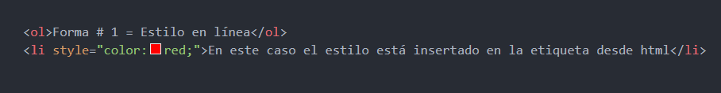
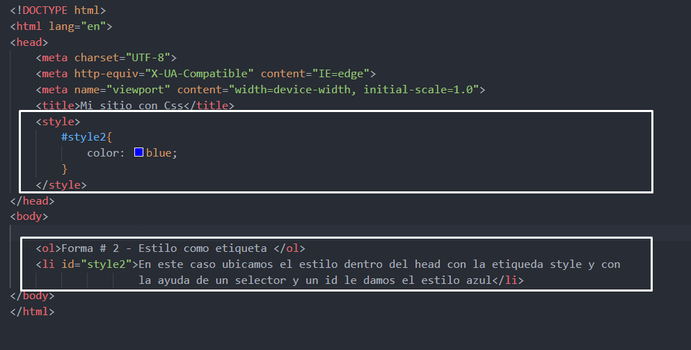
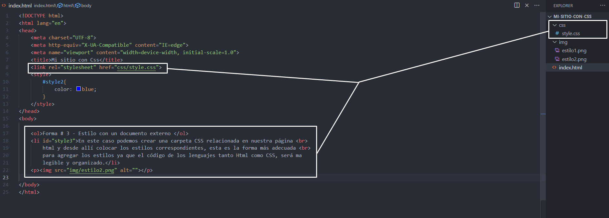

3 formas de poner estilos en CSS (ver el código)
Forma # 1 = Estilo en línea
En este caso el estilo está insertado en la etiqueta desde html

Forma # 2 - Estilo como etiqueta
En este caso ubicamos el estilo dentro del head con la etiqueda style y con
la ayuda de un selector y un id le damos el estilo azul

Forma # - Estilo con un documento externo
En este caso podemos crear una carpeta CSS relacionada en nuestra página
html y desde allí colocar los estilos correspondientes, esta es la forma más adecuada
para agregar los estilos ya que el código de los lenguajes tanto Html como CSS, será ma
legible y organizado.
